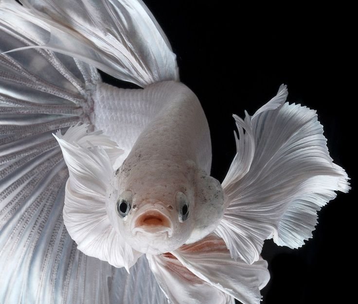

Fish Information
Breed: Bubble eye
Health:Regular water quality checks and maintenance can help prevent common fish diseases. Ensure proper filtration, avoid overfeeding, and quarantine new fish before introducing them to the main tank.
Treatment : If a fish shows signs of illness, isolate it from the main tank to prevent spreading disease to other fish. Consult with a veterinarian or aquatic expert for proper diagnosis and treatment options. Treatments may include medicated baths, antibiotics, or antiparasitic medications.
Age:3 months
Gender:Female
Color: White